Mahasiswa mampu memahami konsep array multidimensi
Mahasiswa mampu memberikan contoh penggunaan array multidimensi
Mahasiswa mampu membuat program menggunakan konsep array multidimensi
Alat dan Bahan
PC atau Laptop
JDK
NetBeans IDE
Uraian Teori
Array adalah sekumpulan tempat penyimpanan data yang bertipe sama dan memiliki index. Array dapat diibaratkan sebagai
sekumpulan variabel yang bertipe sama dan bernama sama. Array biasanya digunakan untuk menyimpan deret angka. Kemudian
untuk membedakan nilai/isi dari variabel tersebut, digunakan index.
Ada dua tipe array:
Array satu dimensi
Array multi dimensi
Pada jobsheet praktikum ini hanya akan dibahas array satu dimensi saja. Array multi dimensi akan dibahas di jobsheet
selanjutnya.
Array Satu Dimensi
Amati ilustrasi tentang variabel berikut ini.
Gambar 1 Variabel
Ilustrasi diatas adalah variabel bertipe integer yang bernama bilanganBulat dan berisi nilai 17. Satu buah variabel
hanya dapat menyimpan satu buah nilai. Sekarang amati ilustrasi tentang array berikut ini:
Gambar 2 Array satu dimensi
Ilustrasi diatas adalah array bertipe integer bernama arrayInteger dan memiliki kapasitas 5 buah bilangan
integer. Sebuah array dapat menyimpan lebih dari satu nilai (tergantung dari kapasitasnya). Meskipun begitu, nilai-nilai
yang disimpan di sebuah array harus bertipe sama. Tiap elemen pada array dinomori dengan index array. Index array
selalu dimulai dari 0 (nol).
Cara Mendeklarasikan Array
Secara umum, cara mendeklarasikan array adalah sebagai berikut:
tipe[] namaArray = new tipe[kapasitas];
Tipe adalah tipe data dari array yang akan dibuat.
namaArray adalah nama dari array yang akan dibuat.
Kapasitas adalah banyaknya nilai yang dapat disimpan didalam array yang akan dibuat.
Untuk mengakses (mengisi/membaca) sebuah elemen dari array, kita hanya perlu menuliskan nama array tersebut, kemudian
diikuti dengan index yang dituju didalam tanda kurung kotak [ ].
Contoh program berikut ini membuat array bernama bil, bertipe integer, jumlah elemen 4, kemudian mengisinya dengan
beberapa nilai, kemudian menampilkan isi elemennya ke layar.
Ada beberapa alternatif cara untuk mendeklarasikan array.
Deklarasi array tanpa mengalokasikan jumlah elemennya:
Untuk mengakses (mengisi/membaca) nilai dari sebuah array, kita dapat menggunakan perulangan.
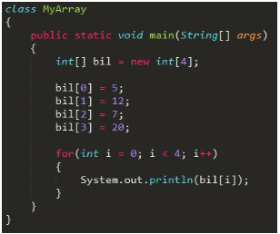
Hasil
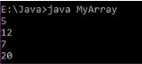
Kita juga bisa menggunakan perulangan untuk menerima input dan menyimpannya kedalam array. Contoh, program yang meminta
input sebanyak 5 bilangan kemudian menampilkan kembali 5 bilangan tersebut.
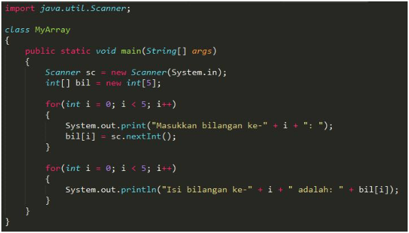
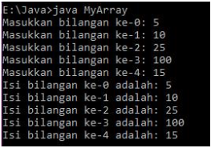
Input Jumlah Elemen Array
Kita juga dapat membuat program yang meminta input berapa banyak jumlah elemen array.
Langkahnya secara umum adalah:
Deklarasikan array tanpa mengalokasikan jumlah elemennya.
Buat input yang menerima jumlah elemen array kemudian simpan di sebuah variabel.
Set jumlah elemen array menggunakan variabel yang diinputkan tadi.
Coba amati program berikut ini:
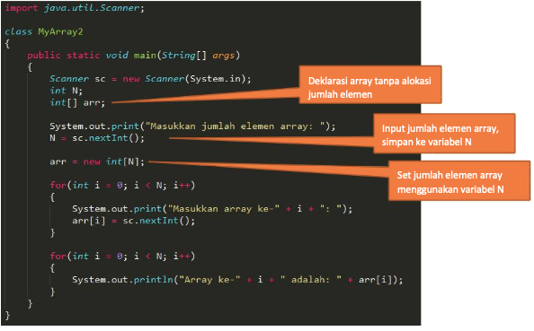
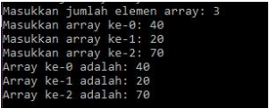
Langkah Praktikum
Ikuti langkah-langkah praktikum berikut ini.
Praktikum 1
Buat class baru dengan nama MyArray.java
Buat array bertipe integer dengan nama bil dengan kapasitas 4 elemen.
int[] bil = new int[4]
Isi masing-masing elemen array bil tadi dengan angka 5, 12, 7, 20.
Modifikasi program agar menampilkan semua mahasiswa, dan ditandai mana yang lulus dan tidak lulus.
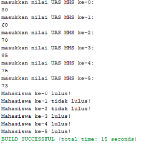
Praktikum 3
Pada praktikum ini, akan dilakukan percobaan untuk menjumlahkan Array. Program akan menerima input sebanyak 10 nilai
mahasiswa. Kemudian program akan menampilkan nilai rata-rata dari dari 10 Mahasiswa.
Buat class baru beri nama rataNilai.
Import dan deklarasikan Scanner untuk keperluan input.
Scanner sc = new Scanner(System.in)
Buat array nilaiMHS bertipe integer dengan kapasitas 10. Kemudian deklarisakan variable total dan rata seperti
gambar berikut ini
int[] nilaiMHS = newint[10];
int total = 0;
double rata;
Menggunakan perulangan, buat input untuk mengisi array nilaiMHS
Kemudian hitung nilai rata-rata dengan cara nilai total dibagi jumlah elemen dari array nilaiMHS
rata = total/nilaiMHS.length;
System.out.println(rata);
Amati hasilnya
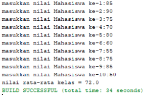
Pertanyaan
Pada praktikum 4 no 6. Mengapa perhitungan rata berada diluar perulangan?
Modifikasi program pada praktikum 4 sehingga bisa mengeluarkan output seperti gambar berikut ini
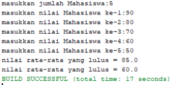
Tugas
Kerjakan tugas sesuai dengan instruksi berikut ini.
Buatlah program yang terdapat array dengan jumlah elemen 5, buatlah input untuk mengisi elemen array tersebut,
kemudian tampilkan isi array tersebut dengan urutan terbalik. Seperti ilustrasi gambar dibawah ini.
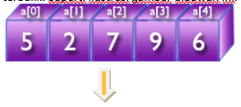
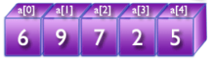
Buatlah program yang menerima input jumlah elemen array, inputkan isi arraynya, kemudian tampilkan mana yang genap
dan mana yang ganjil. Contoh hasil program:
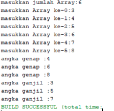
Dengan menggunakan konsep Array, Buatlah program untuk menghitung Nilai IP Semester berdasarkan Matakuliah yang
Anda Ambil semester ini. Program meminta pengguna untuk memasukkan jumlah matakuliah yang diambil pada semester ini,
selanjutnya program tersebut meminta pengguna untuk memasukkan nama matakuliah, bobot SKS masing-masing matakuliah,
dan Nilai dari masing-masing matakuliah.
Contoh hasil program:
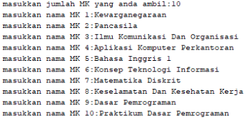
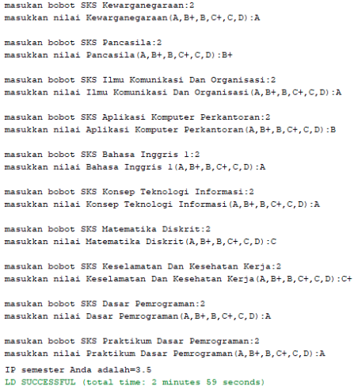
Catatan : konversi nilai yang digunakan sesuai dengan peraturan polinema
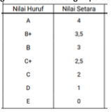
Buatlah program untuk menghapus elemen tertentu pada sebuah Array
(ArrayMax) Buatlah program yang menerima input jumlah elemen array, inputkan isi arraynya, kemudian tampilkan
bilangan terbesar dari isi elemen arraynya. Contoh hasil program:
Salah satu hal yang sering dilakukan pada operasi array adalah pencarian atau searching. Pencarian dilakukan untuk
menemukan nilai tertentu pada elemen didalam array. Ada banyak algoritma searching, namun yang paling mudah adalah
Linear Search.
Misalkan pada sebuah array, kita ingin mencari dimana posisi index dari sebuah array. Pada Linear Search, kita
membandingkan “key” atau angka yang ingin kita cari, dengan tiap elemen yang ada didalam array. Amati gambar berikut:
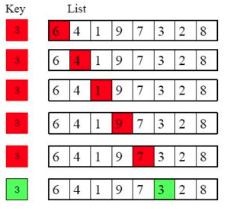
Linier search
Pada gambar diatas, key atau angka yang ingin kita cari adalah 3. Menggunakan looping kita bandingkan masing-masing
elemen dari array. Dan ternyata angka 3 berada di index ke 5. Maka setelah ketemu, looping akan berhenti, dan hasil
akhir dari program adalah 5 (index dimana angka 3 berada). Amati contoh program berikut:
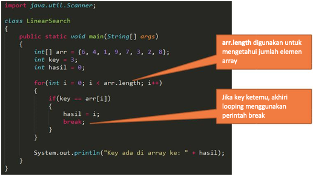
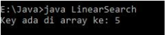
Hasilnya
Sorting
Sorting adalah proses mengurutkan elemen array dari yang terkecil ke besar (ascending) atau sebaliknya (descending).
Ada banyak algoritma untuk pengurutan, namun yang paling mudah adalah Bubble Sort.
Didalam Bubble Sort, dilakukan looping dari elemen pertama sampai elemen terakhir dari array. Kemudian tiap elemen
dibandingkan dengan elemen berikutnya. Jika elemen tersebut lebih besar dari elemen berikutnya, maka akan ditukar.
Amati ilustrasi berikut ini:
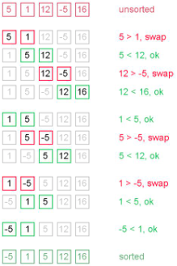
Bubble sort
Berikut adalah contoh program Bubble Sort:
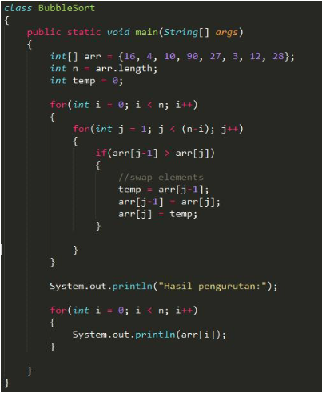
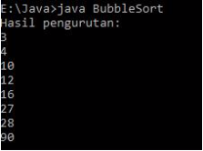
Hasilnya
Tugas Pengayaan
Kerjakan tugas sesuai dengan instruksi berikut ini.
Buatlah program yang menerima input jumlah array, isi array, key yang ingin dicari. Cetak ke layar index posisi
elemen dari key yang ingin dicari. Contoh hasil program:
Masukkan jumlah elemen array: 4
Array ke 0: 5
Array ke 1: 12
Array ke 2: 25
Array ke 3: 10
Masukkan key yang ingin dicari: 12
Key ada di posisi index ke: 1
Buatlah program yang menerima input jumlah array, isi array, kemudian urutkan array tersebut, kemudian tampilkan ke
layar hasil pengurutannya. Contoh hasil program:
Masukkan jumlah elemen array: 4
Array ke 0: 5
Array ke 1: 12
Array ke 2: